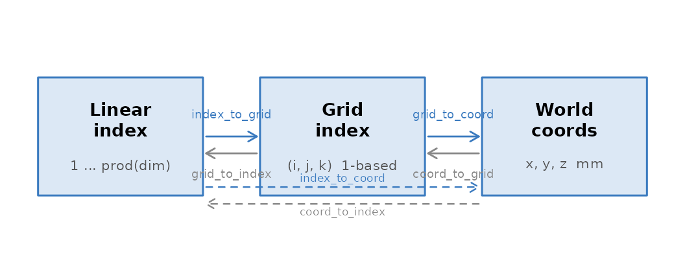

Coordinate Systems and Spatial Transforms
Source:vignettes/coordinate-systems.Rmd
coordinate-systems.RmdEvery neuro object in neuroim2 — a NeuroVol, a
NeuroVec, an ROI — carries a NeuroSpace that
answers one question: where in the scanner room does this voxel
sit? Get that mapping right and anatomical coordinates, atlas
overlays, and multi-subject registration all fall into place. Get it
wrong and your activations end up in the wrong hemisphere.
This vignette builds the mental model from the ground up: what a
NeuroSpace is, how the affine transform works, and how to
move fluently between voxel indices, grid coordinates, and millimetre
world coordinates.
What is a NeuroSpace?
A NeuroSpace is the spatial reference frame attached to
every neuro image. It bundles:
-
Grid dimensions — how many voxels along each axis
(
dim) -
Voxel spacing — physical size of each voxel in
millimetres (
spacing) -
Origin — world coordinates of voxel
(1, 1, 1)in mm (origin) -
Affine transform — the 4 × 4 matrix that maps voxel
indices to mm (
trans) -
Axis orientation — which anatomical direction each
image axis points (
axes)
sp <- NeuroSpace(
dim = c(64L, 64L, 40L),
spacing = c(2, 2, 2),
origin = c(-90, -126, -72)
)
sp
#> <NeuroSpace> [3D]
#> ── Geometry ────────────────────────────────────────────────────────────────────
#> Dimensions : 64 x 64 x 40
#> Spacing : 2 x 2 x 2 mm
#> Origin : -90, -126, -72
#> Orientation : RAS
#> Voxels : 163,840
dim(sp) # grid dimensions
#> [1] 64 64 40
spacing(sp) # voxel sizes in mm
#> [1] 2 2 2
origin(sp) # world coords of voxel (1,1,1)
#> [1] -90 -126 -72
ndim(sp) # number of spatial dimensions
#> [1] 3The NeuroSpace is also the bridge to any volume or
time-series built on top of it. Call space(x) on any neuro
object to retrieve it.
The Affine Transform
The affine transform is a 4 × 4 homogeneous matrix stored in
trans(sp). It maps a voxel position (expressed as a
zero-based column vector) to millimetre world coordinates:
[x_mm] [M t] [i]
[y_mm] = [ [j]
[z_mm] 0 1] [k]
[ 1 ] [1]where M is the 3 × 3 linear part (encodes spacing,
rotation, and possible shear) and t is the 3-element
translation (the origin in mm).
For an axis-aligned image built from spacing and
origin, M is diagonal:
trans(sp)
#> [,1] [,2] [,3] [,4]
#> [1,] 2 0 0 -90
#> [2,] 0 2 0 -126
#> [3,] 0 0 2 -72
#> [4,] 0 0 0 1The translation column (trans(sp)[1:3, 4]) recovers the
origin, and the diagonal of the linear block recovers the voxel
sizes:
# Translation column = origin
trans(sp)[1:3, 4]
#> [1] -90 -126 -72
# Diagonal of linear block = voxel sizes
diag(trans(sp)[1:3, 1:3])
#> [1] 2 2 2The inverse affine (world -> voxel) is cached and accessible via
inverse_trans(sp):
inverse_trans(sp)
#> [,1] [,2] [,3] [,4]
#> [1,] 0.5 0.0 0.0 45
#> [2,] 0.0 0.5 0.0 63
#> [3,] 0.0 0.0 0.5 36
#> [4,] 0.0 0.0 0.0 1Passing an explicit affine
You can supply a full 4 × 4 affine directly to
NeuroSpace(). neuroim2 will derive spacing and
origin from it automatically:
aff <- diag(c(3, 3, 4, 1)) # 3 × 3 × 4 mm voxels
aff[1:3, 4] <- c(-90, -126, -72) # origin
sp_aff <- NeuroSpace(dim = c(60L, 60L, 35L), trans = aff)
spacing(sp_aff) # derived from column norms of linear block
#> [1] 3 3 4
origin(sp_aff) # derived from translation column
#> [1] -90 -126 -72When the affine is oblique (rotated relative to the scanner axes),
spacing() returns the column norms of the linear block —
the true physical voxel sizes — while the diagonal of the linear block
would be smaller. See the Oblique affines section below.
Voxel vs World Coordinates
neuroim2 uses 1-based grid indices everywhere, matching R’s array conventions. The affine convention is therefore:
grid_to_coordsubtracts 1 from each 1-based index before applying the affine, placing voxel(1, 1, 1)at the origin.
There are two flavours of voxel addressing:
| Address type | Range | Description |
|---|---|---|
| Linear index | 1 ... prod(dim) |
Single integer; column-major (as in R arrays) |
| Grid index | (1...d1, 1...d2, 1...d3) |
3-tuple of 1-based integers |
And one world-coordinate system: millimetres, defined by the affine.

The three addressing schemes and the functions that convert between them.
Coordinate Conversions
All conversion functions accept a NeuroSpace (or any
neuro object, via its attached space) as the first argument.
Grid <-> linear index
# Which linear index does grid position (10, 12, 5) map to?
grid_to_index(sp, matrix(c(10, 12, 5), nrow = 1))
#> [1] 17098
# And back to grid
index_to_grid(sp, 8394L)
#> [,1] [,2] [,3]
#> [1,] 10 4 3Grid -> world coordinates
grid_to_coord subtracts 1 from the 1-based grid before
applying the affine, so grid (1, 1, 1) maps exactly to the
origin:
grid_to_coord(sp, matrix(c(1, 1, 1), nrow = 1)) # should equal origin(sp)
#> [,1] [,2] [,3]
#> [1,] -90 -126 -72
grid_to_coord(sp, matrix(c(10, 12, 5), nrow = 1))
#> [,1] [,2] [,3]
#> [1,] -72 -104 -64Multiple points are passed as a matrix with one row per point:
pts <- matrix(c(
1, 1, 1,
32, 32, 20,
64, 64, 40
), ncol = 3, byrow = TRUE)
grid_to_coord(sp, pts)
#> [,1] [,2] [,3]
#> [1,] -90 -126 -72
#> [2,] -28 -64 -34
#> [3,] 36 0 6World -> grid coordinates
coord_to_grid(sp, c(0, 0, 0)) # near isocenter
#> [1] 46 64 37
coord_to_grid(sp, matrix(c(0, 0, 0,
10, -20, 8), ncol = 3, byrow = TRUE))
#> [,1] [,2] [,3]
#> [1,] 46 64 37
#> [2,] 51 54 41Convenience: linear index <-> world
# Linear index 1 should land at the origin (pass integer)
index_to_coord(sp, 1L)
#> [,1] [,2] [,3]
#> [1,] -89 -125 -71
# World coord back to linear index
coord_to_index(sp, matrix(c(-90, -126, -72), nrow = 1))
#> [1] -2079A concrete round-trip
idx <- 12345L
grid <- index_to_grid(sp, idx)
world <- grid_to_coord(sp, grid)
back <- coord_to_index(sp, world)
cat("index:", idx, "-> grid:", grid, "-> world:", round(world, 2),
"-> index:", back, "\n")
#> index: 12345 -> grid: 57 1 4 -> world: 22 -126 -66 -> index: 10264Orientation Codes
Neuroimaging images can be stored in many orientations. The orientation code (also called axis codes or RAS codes) tells you which anatomical direction each image axis points:
| Letter | Anatomical direction |
|---|---|
| R | increasing -> Right |
| L | increasing -> Left |
| A | increasing -> Anterior |
| P | increasing -> Posterior |
| S | increasing -> Superior |
| I | increasing -> Inferior |
A code of "RAS" means: axis 1 runs left-to-right, axis 2
runs posterior-to-anterior, axis 3 runs inferior-to-superior. This is
the standard NIfTI/MNI convention. "LPI" (sometimes called
“neurological”) reverses all three.
affine_to_axcodes() reads the orientation directly from
the affine matrix:
affine_to_axcodes(trans(sp))
#> [1] "R" "A" "S"The default axis-aligned NeuroSpace built above uses the
nearest-anatomy convention inferred from the affine. You can also
inspect the axes slot directly:
axes(sp)
#> <AxisSet3D>
#> Axis 1 : Left-to-Right
#> Axis 2 : Posterior-to-Anterior
#> Axis 3 : Inferior-to-SuperiorReorienting a space
reorient() flips and permutes the affine to match a
target orientation string:
sp_ras <- reorient(sp, c("R", "A", "S"))
affine_to_axcodes(trans(sp_ras))
#> [1] "L" "P" "I"Creating NeuroSpaces
From dim + spacing + origin (axis-aligned)
The simplest case: an isotropic or anisotropic grid with no rotation.
# 2 mm isotropic, MNI-ish origin
sp_mni <- NeuroSpace(
dim = c(91L, 109L, 91L),
spacing = c(2, 2, 2),
origin = c(-90, -126, -72)
)
sp_mni
#> <NeuroSpace> [3D]
#> ── Geometry ────────────────────────────────────────────────────────────────────
#> Dimensions : 91 x 109 x 91
#> Spacing : 2 x 2 x 2 mm
#> Origin : -90, -126, -72
#> Orientation : RAS
#> Voxels : 902,629From an explicit affine
When you have a NIfTI sform/qform matrix, pass it directly:
# Oblique affine: slight off-diagonal terms (scanner tilt)
aff_obl <- matrix(c(
2.0, 0.2, 0.0, -90,
0.0, 2.0, 0.1, -126,
0.0, 0.0, 2.0, -72,
0.0, 0.0, 0.0, 1
), nrow = 4, byrow = TRUE)
sp_obl <- NeuroSpace(dim = c(91L, 109L, 91L), trans = aff_obl)
# spacing() returns column norms — the true physical voxel sizes
spacing(sp_obl)
#> [1] 2.00000 2.00998 2.00250
# diagonal is not exactly 2 mm when the image is tilted
diag(aff_obl[1:3, 1:3])
#> [1] 2 2 2When does spacing() differ from the affine diagonal?
spacing() always returns the column norms of the 3 × 3
linear block — the physical length of each voxel edge. For a pure
diagonal affine these equal the diagonal entries. For a rotated or
oblique affine they differ. Always use spacing() for
physical voxel sizes; never rely on the diagonal directly.
You can also compute voxel sizes from any affine matrix with
voxel_sizes():
voxel_sizes(aff_obl)
#> [1] 2.000000 2.009975 2.002498Dimension Manipulation
Adding a time dimension: add_dim
add_dim() extends a 3D NeuroSpace to 4D by
appending a new dimension. The spatial affine is preserved
unchanged:
sp_3d <- NeuroSpace(c(64L, 64L, 40L), spacing = c(2, 2, 2),
origin = c(-90, -126, -72))
sp_4d <- add_dim(sp_3d, 200) # 200 time points
dim(sp_4d)
#> [1] 64 64 40 200
trans(sp_4d) # 4x4 spatial affine unchanged
#> [,1] [,2] [,3] [,4]
#> [1,] 2 0 0 -90
#> [2,] 0 2 0 -126
#> [3,] 0 0 2 -72
#> [4,] 0 0 0 1Dropping the time dimension: drop_dim
drop_dim() removes the last (or a named) dimension:
sp_back <- drop_dim(sp_4d)
dim(sp_back)
#> [1] 64 64 40
all.equal(trans(sp_back), trans(sp_3d)) # affine preserved
#> [1] TRUEThis round-trip is used internally whenever a 4D volume is sliced to a single time point.
Resampling and Reorientation
resample — change voxel size, keep geometry
resample() resamples a NeuroVol into a
target space (or another volume’s space). To demonstrate, build a small
volume and resample it to a coarser grid:
deoblique — remove scanner tilt
Many scanners acquire data with a slight tilt relative to the MNI
axes. The resulting affine has non-zero off-diagonal elements (an
oblique affine). deoblique() builds an
axis-aligned output space that encloses the original field of view,
using the minimum input voxel size by default (AFNI-style):
sp_deob <- deoblique(sp_obl)
affine_to_axcodes(trans(sp_deob)) # now axis-aligned
#> [1] "R" "A" "S"
obliquity(trans(sp_deob)) # near zero
#> [1] 0 0 0When passed a NeuroVol, deoblique() also
resamples the image data into the new space.
Common Gotchas
1. Oblique affines and spacing() If
diag(trans(sp)[1:3, 1:3]) does not match
spacing(sp), the affine is oblique. Use
obliquity(trans(sp)) to quantify the tilt angle (in
radians) per axis.
obliquity(aff_obl) # non-zero: image is slightly tilted
#> [1] 0.00000000 0.09966865 0.04995840
obliquity(trans(sp_mni)) # near zero: axis-aligned
#> [1] 0 0 02. 1-based grid indices R uses 1-based indexing.
grid_to_coord() handles this by subtracting 1 before
applying the affine, so voxel (1, 1, 1) lands at
origin(sp). If you ever use raw affine arithmetic, remember
to subtract 1 from your 1-based grid coordinates first.
3. NIfTI sform vs qform NIfTI files store two
possible affines (sform and qform). read_vol() and
read_vec() follow the NIfTI priority rules: sform_code >
0 -> use sform; otherwise use qform. The resulting
trans(space(img)) reflects whichever was chosen. You can
inspect the header with read_header() if you need to see
both.
4. Float32 precision NIfTI stores affine
coefficients as 32-bit floats. neuroim2 rounds the affine to 7
significant figures on construction (signif(trans, 7)) to
match this precision. Round-trip coordinates through
index_to_coord / coord_to_index may therefore
show sub-voxel floating-point noise at the ~0.001 mm level.
Quick Reference
| Function | Input -> Output | Typical use |
|---|---|---|
grid_to_index(sp, mat) |
grid -> linear index | looking up voxel data |
index_to_grid(sp, idx) |
linear index -> grid | converting R array subscripts |
grid_to_coord(sp, mat) |
grid -> mm | overlay on anatomy |
coord_to_grid(sp, mat) |
mm -> grid | atlas lookup |
index_to_coord(sp, idx) |
linear index -> mm | shortcut past grid |
coord_to_index(sp, mat) |
mm -> linear index | mask extraction |
affine_to_axcodes(aff) |
affine -> "RAS" etc. |
orientation check |
voxel_sizes(aff) |
affine -> mm vector | physical voxel size |
obliquity(aff) |
affine -> radians | tilt check |
add_dim(sp, n) |
3D space -> 4D space | attach time axis |
drop_dim(sp) |
4D space -> 3D space | strip time axis |
resample(sp, spacing) |
space -> resampled space | change resolution |
reorient(sp, codes) |
space -> reoriented space | standardise orientation |
deoblique(sp) |
oblique space -> aligned space | remove scanner tilt |
Where to go next
-
vignette("ImageVolumes")— creating and manipulatingNeuroVolobjects -
vignette("NeuroVector")— working with 4D time-series (NeuroVec) -
vignette("Resampling")— image resampling in depth -
vignette("regionOfInterest")— ROI construction and coordinate-based queries -
?NeuroSpace,?affine_to_axcodes,?deoblique— function reference pages